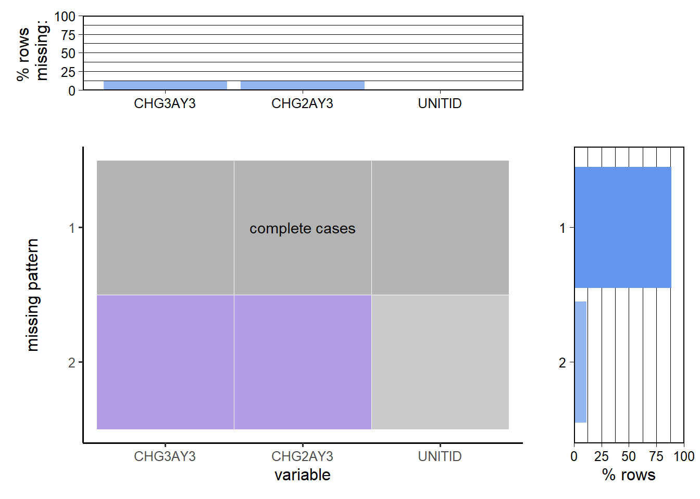

Chapter 3 Data
3.1 Sources
In our search for US colleges statistics, we focused on the US colleges’ admission process. The U.S. Department of Education’s National Center for Education Statistics (NCES) collects such data annually. We decided to analyze Integrated Postsecondary Education Data System (IPEDS) data from the National Center for Education Statistics (NCES), which contains all the college-level information we need. It is collected by conducting several interrelated surveys from about 6,400 colleges, universities, and technical and vocational institutions that participate in the federal student aid programs, hence we decided this is reliable and adequate data for our analysis.
The other datasets we found were subsets of this data. This was the most extensive dataset that could be used to analyze, explore and visualize, to answer our question of “How do we select the ideal college for our higher education?”
For each year, NCES releases the data twice - the first being provisional data and then the final data. The provisional data has been said to undergo all the NCES data quality control procedures. This is released after each year. The final data includes the revisions institutions make. This is released after two years.
Since the data itself is collected from surveys answered by institutions, there is an inherent unsureness/skepticism about the correctness of the data. As we saw this year, Columbia University acknowledged giving false data for the US News ranking, attributing it to outdated methodologies. For our purpose, we assume the correctness of the data reported in surveys.
We can contact NCES if we have any questions about the data that is collected.
3.2 Cleaning / transformation
We are using the tables ADM2019, HD2019, IC2019_AY, SFA1819_P1, DRVGR2019, EF2019A, and EF2019D from the access database to perform EDA and visualize trends in the data.
ADM2019: This table contains information about the undergraduate selection process for entering first-time, degree/certificate-seeking students. This includes information about admission considerations, applicants, applicants that were admitted, and admitted students who enrolled. SAT and ACT test scores are included for institutions, that require test scores for admission. These data are applicable for institutions that do not have an open admissions policy for entering first-time students. Writing scores for both SAT and ACT are no longer collected.
HD2019: This table contains directory information for every institution in the 2019 IPEDS universe. Includes name, address, city, state, zip code and various other information. We used it to match state and institute name with UNITID (which is used in all other tables).
IC2019_AY: This table contains data on student charges for a full academic year. The price of attendance of full-time first-time undergraduates that are made available to the public on College Navigator are included in this table. Price of attendance includes amounts for published tuition and required fees, books and supplies, room and board and other expenses.
SFA1819_P1: This table contains data on the number of full-time, first-time degree/certificate-seeking undergraduate students and all undergraduate students who receive different types of student financial aid, including grants and loans, from different sources at each institution.
DRVGR2019: Table contains the graduation rates derived from the graduation rate data for selected cohorts. Graduation rates grouped by gender are also provided.
EF2019A: This table contains the number of students enrolled in the fall, by race/ethnicity, gender, attendance (full- or part-time) status and level of student. Each record will contain the total enrollment, enrollment for men and women, and the total enrollment and enrollment for men and women for all nine race/ethnicity categories.
EF2019D: This table contains data on the total entering class, first-year retention rates and the student-to-faculty ratio. Student-to-faculty ratio is defined as total FTE students not in graduate or professional programs divided by total FTE instructional staff not teaching in graduate or professional programs. All data in this table are applicable only to institutions with undergraduate students.
Retrieving data from Microsoft Access Database: We need to install the 64-bit database engine from: microsoft. This download will install a set of components that can be used to facilitate transfer of data between 2010 Microsoft Office System files and non-Microsoft Office applications. We use the odbcDriverConnect function from the RODBC library to transform the data from access database format into a usable dataframe in R. We didn’t require any data cleaning or transformation before EDA.
For any clarification on the variable names or levels of categorical variables and what they represent, please see documentation in ‘IPEDS201920TableDocs.xlsx’, in ‘IPEDS_2019-20_Final’ folder
3.3 Missing value analysis
## [1] "Missing values in ADM2019"## ACTEN25 ACTEN75 ACTMT25 ACTMT75 SATVR25 SATVR75 SATMT25 SATMT75 ACTCM25 ACTCM75 SATNUM SATPCT ACTNUM ACTPCT ENRLPTM ENRLPTW ENRLPT ENRLFTM
## 840 840 840 840 791 791 791 791 757 757 722 722 722 722 588 535 523 148
## ENRLFTW ENRLM ENRLW ADMSSNW ADMSSNM ENRLFT ENRLT ADMSSN UNITID ADMCON1 ADMCON2 ADMCON3 ADMCON4 ADMCON5 ADMCON6 ADMCON7 ADMCON8 ADMCON9
## 127 115 111 104 94 39 23 18 0 0 0 0 0 0 0 0 0 0
## APPLCN APPLCNM APPLCNW
## 0 0 0## [1] "Missing values in IC2019_AY"## CHG3AY3 CHG2AY3 UNITID
## 458 458 0## [1] "Missing values in SFA1819_P1"## IGRNT_A IGRNT_N IGRNT_P UNITID
## 1922 294 294 0## [1] "Missing values in DRVGR2019"## GBA4RTT GRRTW GRRTM UNITID
## 3499 1774 1773 0## [1] "Missing values in HD2019"## UNITID INSTNM STABBR
## 0 0 0## [1] "Total missing values in EF2019A"## [1] 0## [1] "Total missing values in EF2019D"## [1] 1Checking for duplicate rows
## [1] "Duplicates in ADM2019"## [1] 0## [1] "Duplicates in IC2019_AY"## [1] 0## [1] "Duplicates in SFA1819_P1"## [1] 0## [1] "Duplicates in DRVGR2019"## [1] 0## [1] "Duplicates in HD2019"## [1] 0## [1] "Duplicates in EF2019D"## [1] 03.3.1 Tables: IC2019_AY, SFA1819_P1, DRVGR2019, HD2019
Firstly, we deal with missing values in IC2019_AY, SFA1819_P1, DRVGR2019. For this step, we use plot_missing function from redav library.


We remove all the rows with missing values in IC2019_AY, SFA1819_P1. But, in the case of DRVGR2019, there are a lot of rows with missing values only from column GBA4RTT(Graduation rate - Bachelor degree within 4 years, total). Hence, we will create two dataframes. One which removes missing values from men and women graduation rates to analyze. Next, we remove the missing values in total graduation rate to analyze the total statistics. Next, we save the cleaned datasets in the Data folder to use for further analysis.
## [1] "Number of rows, columns in IC2019_AY"## [1] 3535 3## [1] "Number of rows, columns in SFA1819_P1"## [1] 3987 4## [1] "Number of rows, columns in DRVGR2019_A"## [1] 3659 4In total, there are 8 continuous variables in the 3 tables (IC2019_AY, SFA1819_P1, DRVGR2019_A) combined, and a UNITID column which is the ID for each college. HD2019 has no missing values and has 2 categorical variables and UNITID columns.
3.3.2 Table: ADM2019
Now, we deal with the missing values in ADM2019 table. First we use the plot_missing function from redav library to visualize missing patterns. (The function outputs a graph with overlapping axes and we were not able to read the x-labels. So we copy-pasted the code and rotated the x axis labels by 90 degrees, and changes the size of labels accordingly for our data)

ENRLT is the total number of enrolled students, and ENRLM is the total number of enrolled men; the rows starting with SAT and ACT give the 25th percentile and 75th percentile scores in tests, and these are a main part of our analysis. Without these values, we cannot form meaningful hypotheses, so we are removing the schools that didn’t provide these data. After this, our missing values look like this:
## ENRLPTM ENRLPTW ENRLPT ENRLW ENRLFTM ENRLFTW ADMSSNW UNITID ADMCON1 ADMCON2 ADMCON3 ADMCON4 ADMCON5 ADMCON6 ADMCON7 ADMCON8 ADMCON9 APPLCN
## 187 186 184 3 3 3 2 0 0 0 0 0 0 0 0 0 0 0
## APPLCNM APPLCNW ADMSSN ADMSSNM ENRLT ENRLM ENRLFT SATNUM SATPCT ACTNUM ACTPCT SATVR25 SATVR75 SATMT25 SATMT75 ACTCM25 ACTCM75 ACTEN25
## 0 0 0 0 0 0 0 0 0 0 0 0 0 0 0 0 0 0
## ACTEN75 ACTMT25 ACTMT75
## 0 0 0The majority missing values are in Part time student enrollment statistics. These are not very pertinent to our analysis, so we are dropping these columns. Enrollment of men and total enrollment determine the women enrollment (based on responses from majority colleges), so dropping this column too, and calculating it using (Total enrollment - men enrollment) instead. After this, only missing values are 3 rows in full-time enrollment of men. These 3 rows are dropped to get a cleaned dataframe. This dataset is now saved in the Data folder for further analysis.
## [1] "Number of rows, columns in ADM2019"## [1] 1089 36In this table, there are 9 categorical variables, and 26 continuous variables and a UNITID column which is the ID for each college.
3.3.3 Table: EF2019A, EF2019D
As seen earlier, there is no missing value in EF2019A table, the dataset is directly saved in the Data folder. As seen earlier, there is one missing value in EF2019D table, we dropped it to clean the dataset and saved it in the Data folder.
## [1] "Number of rows, columns in EF2019A"## [1] 118917 35## [1] "Number of rows, columns in EF2019D"## [1] 5884 2There are 4 categorical variables and 30 continuous variables in the EF2019A table, and 1 continuous variable in the EF2019D table, along with the UNITID column.
In total, our datasets have 15 categorical variables and 65 continuous variables (some of these are dependent on other variables) and a common UNITID column for each college.
Note: There are other tables that have processed admission statistics like percent yields in admission for each gender, etc, but we are using the raw data tables collected from the surveys only, and analysing this data.